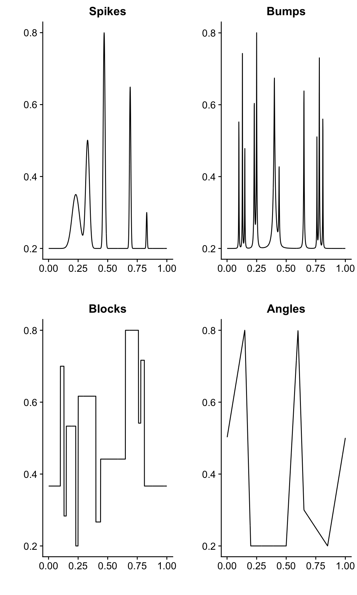
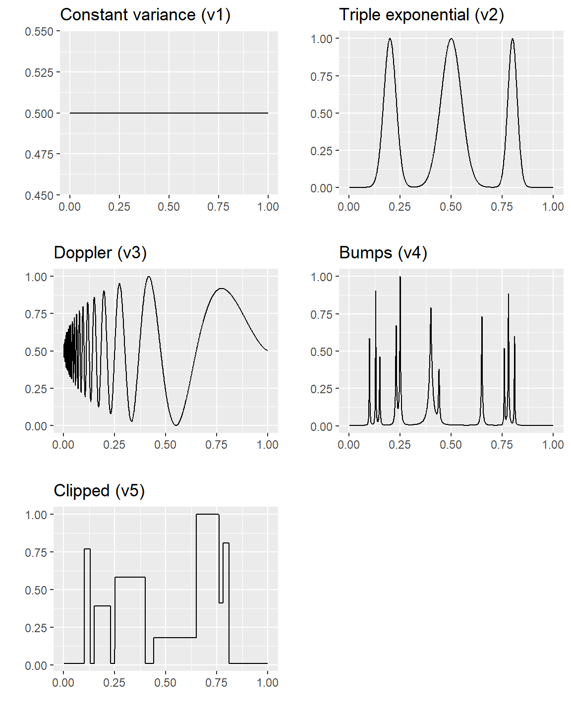

Last updated: 2019-11-12
Checks: 7 0
Knit directory: smash-paper/analysis/
This reproducible R Markdown analysis was created with workflowr (version 1.5.0). The Checks tab describes the reproducibility checks that were applied when the results were created. The Past versions tab lists the development history.
Great! Since the R Markdown file has been committed to the Git repository, you know the exact version of the code that produced these results.
Great job! The global environment was empty. Objects defined in the global environment can affect the analysis in your R Markdown file in unknown ways. For reproduciblity it’s best to always run the code in an empty environment.
The command set.seed(1) was run prior to running the code in the R Markdown file. Setting a seed ensures that any results that rely on randomness, e.g. subsampling or permutations, are reproducible.
Great job! Recording the operating system, R version, and package versions is critical for reproducibility.
Nice! There were no cached chunks for this analysis, so you can be confident that you successfully produced the results during this run.
Great job! Using relative paths to the files within your workflowr project makes it easier to run your code on other machines.
Great! You are using Git for version control. Tracking code development and connecting the code version to the results is critical for reproducibility. The version displayed above was the version of the Git repository at the time these results were generated.
Note that you need to be careful to ensure that all relevant files for the analysis have been committed to Git prior to generating the results (you can use wflow_publish or wflow_git_commit). workflowr only checks the R Markdown file, but you know if there are other scripts or data files that it depends on. Below is the status of the Git repository when the results were generated:
Ignored files:
Ignored: dsc/code/Wavelab850/MEXSource/CPAnalysis.mexmac
Ignored: dsc/code/Wavelab850/MEXSource/DownDyadHi.mexmac
Ignored: dsc/code/Wavelab850/MEXSource/DownDyadLo.mexmac
Ignored: dsc/code/Wavelab850/MEXSource/FAIPT.mexmac
Ignored: dsc/code/Wavelab850/MEXSource/FCPSynthesis.mexmac
Ignored: dsc/code/Wavelab850/MEXSource/FMIPT.mexmac
Ignored: dsc/code/Wavelab850/MEXSource/FWPSynthesis.mexmac
Ignored: dsc/code/Wavelab850/MEXSource/FWT2_PO.mexmac
Ignored: dsc/code/Wavelab850/MEXSource/FWT_PBS.mexmac
Ignored: dsc/code/Wavelab850/MEXSource/FWT_PO.mexmac
Ignored: dsc/code/Wavelab850/MEXSource/FWT_TI.mexmac
Ignored: dsc/code/Wavelab850/MEXSource/IAIPT.mexmac
Ignored: dsc/code/Wavelab850/MEXSource/IMIPT.mexmac
Ignored: dsc/code/Wavelab850/MEXSource/IWT2_PO.mexmac
Ignored: dsc/code/Wavelab850/MEXSource/IWT_PBS.mexmac
Ignored: dsc/code/Wavelab850/MEXSource/IWT_PO.mexmac
Ignored: dsc/code/Wavelab850/MEXSource/IWT_TI.mexmac
Ignored: dsc/code/Wavelab850/MEXSource/LMIRefineSeq.mexmac
Ignored: dsc/code/Wavelab850/MEXSource/MedRefineSeq.mexmac
Ignored: dsc/code/Wavelab850/MEXSource/UpDyadHi.mexmac
Ignored: dsc/code/Wavelab850/MEXSource/UpDyadLo.mexmac
Ignored: dsc/code/Wavelab850/MEXSource/WPAnalysis.mexmac
Ignored: dsc/code/Wavelab850/MEXSource/dct_ii.mexmac
Ignored: dsc/code/Wavelab850/MEXSource/dct_iii.mexmac
Ignored: dsc/code/Wavelab850/MEXSource/dct_iv.mexmac
Ignored: dsc/code/Wavelab850/MEXSource/dst_ii.mexmac
Ignored: dsc/code/Wavelab850/MEXSource/dst_iii.mexmac
Untracked files:
Untracked: analysis/figure/
Untracked: files.txt
Unstaged changes:
Modified: code/signals.R
Note that any generated files, e.g. HTML, png, CSS, etc., are not included in this status report because it is ok for generated content to have uncommitted changes.
These are the previous versions of the R Markdown and HTML files. If you’ve configured a remote Git repository (see ?wflow_git_remote), click on the hyperlinks in the table below to view them.
| File | Version | Author | Date | Message |
|---|---|---|---|---|
| html | c21adca | Peter Carbonetto | 2019-11-12 | Greatly simplified code in gaussian_signals analysis. |
| Rmd | 44525e8 | Peter Carbonetto | 2019-11-12 | wflow_publish(“gaussian_signals.Rmd”) |
| html | d01177c | Peter Carbonetto | 2019-11-12 | Simplified some of the code used in the gaussian_signals analysis. |
| Rmd | fe0ba95 | Peter Carbonetto | 2019-11-12 | wflow_publish(“gaussian_signals.Rmd”) |
| html | cc557b5 | Peter Carbonetto | 2019-11-12 | Simplified the plotting code in gaussian_signals analysis. |
| Rmd | fdc9258 | Peter Carbonetto | 2019-11-12 | wflow_publish(“gaussian_signals.Rmd”) |
| html | c6e3cd3 | Peter Carbonetto | 2019-11-12 | Build site. |
| Rmd | 70f9238 | Peter Carbonetto | 2019-11-12 | wflow_publish(“gaussian_signals.Rmd”) |
| html | f0221c5 | Zhengrong Xing | 2019-10-28 | address some reviewer comments |
| html | 8caff70 | Peter Carbonetto | 2018-12-06 | Re-built the workflowr pages after several minor changes to the text |
| Rmd | c589dbb | Peter Carbonetto | 2018-12-06 | wflow_publish(c(“index.Rmd”, “gaussian_signals.Rmd”, |
| html | 35f03c0 | Peter Carbonetto | 2018-12-04 | Changed title of gaussian_signals.Rmd. |
| Rmd | 4a35339 | Peter Carbonetto | 2018-12-04 | wflow_publish(c(“gaussian_signals.Rmd”, “index.Rmd”)) |
| html | 6897465 | Peter Carbonetto | 2018-12-04 | Added gaussian_signals page to the home. |
| Rmd | 7ebd899 | Peter Carbonetto | 2018-12-04 | wflow_publish(c(“gaussian_signals.Rmd”, “index.Rmd”)) |
| html | f35239b | Peter Carbonetto | 2018-12-04 | Completed the gaussian_signals page. |
| Rmd | 53df81d | Peter Carbonetto | 2018-12-04 | wflow_publish(“gaussian_signals.Rmd”) |
| html | abc74e5 | Peter Carbonetto | 2018-12-04 | Added plots for for variance signals. |
| Rmd | c8957e0 | Peter Carbonetto | 2018-12-04 | wflow_publish(“gaussian_signals.Rmd”) |
| html | 1fe523e | Peter Carbonetto | 2018-12-04 | Adjusted the plots of the mean functions. |
| Rmd | 1bddd73 | Peter Carbonetto | 2018-12-04 | wflow_publish(“gaussian_signals.Rmd”) |
| html | dc4c6cd | Peter Carbonetto | 2018-12-04 | I now have plots of all the mean functions in gaussian_signals.Rmd. |
| Rmd | a8b9722 | Peter Carbonetto | 2018-12-04 | wflow_publish(“gaussian_signals.Rmd”) |
| html | 469c32f | Peter Carbonetto | 2018-12-04 | Generated the gaussian_signals webpage for the first time. |
| Rmd | 2ab6ac0 | Peter Carbonetto | 2018-12-04 | wflow_publish(“gaussian_signals.Rmd”) |
| Rmd | ee71f27 | Peter Carbonetto | 2018-12-04 | Made a few small adjustments to the text in the “gaussianmeanest” analysis. |
Load the ggplot2 and cowplot packages, and the functions definining the mean and variances used to simulate the data.
library(ggplot2)
library(cowplot)
source("../code/signals.R")Here, n specifies the length of the signals.
n <- 1024
t <- 1:n/nDefine the mean functions.
mu.sp <- spike.fn(t,"mean")
mu.bump <- bumps.fn(t,"mean")
mu.blk <- blocks.fn(t,"mean")
mu.ang <- angles.fn(t,"mean")
mu.dop <- doppler.fn(t,"mean")
mu.blip <- blip.fn(t,"mean")
mu.cor <- cor.fn(t,"mean")Define the variance functions.
var1 <- cons.fn(t,"var")
var2 <- texp.fn(t,"var")
var3 <- doppler.fn(t,"var")
var4 <- bumps.fn(t,"var")
var5 <- cblocks.fn(t,"var")This function is used to draw the mean and variance functions.
plot.signal <- function (t, y, label)
quickplot(t,y,geom = "line",color = I("darkorange"),
xlab = "",ylab = "",main = label)These plots show each of the mean functions used in generating the Gaussian data sets.
theme_set(theme_cowplot())
plot_grid(plot.signal(t,mu.sp,"Spikes (sp)"),
plot.signal(t,mu.bump,"Bumps (bump)"),
plot.signal(t,mu.blk,"Blocks (blk)"),
plot.signal(t,mu.ang,"Angles (ang)"),
plot.signal(t,mu.dop,"Doppler (dop)"),
plot.signal(t,mu.blip,"Blip (blip)"),
plot.signal(t,mu.cor,"Corner (cor)"),
nrow = 4,ncol = 2)
These plots show the variance functions used in generating the Gaussian data sets. In practice, these functions are rescaled in the simulations to achieve the desired signal-to-noise ratios (see the paper for a more detailed explanation).
plot_grid(plot.signal(t,var1,"Constant variance (v1)"),
plot.signal(t,var2,"Triple exponential (v2)"),
plot.signal(t,var3,"Doppler (v3)"),
plot.signal(t,var4,"Bumps (v4)"),
plot.signal(t,var5,"Clipped (v5)"),
nrow = 3,ncol = 2)
sessionInfo()
# R version 3.4.3 (2017-11-30)
# Platform: x86_64-apple-darwin15.6.0 (64-bit)
# Running under: macOS High Sierra 10.13.6
#
# Matrix products: default
# BLAS: /Library/Frameworks/R.framework/Versions/3.4/Resources/lib/libRblas.0.dylib
# LAPACK: /Library/Frameworks/R.framework/Versions/3.4/Resources/lib/libRlapack.dylib
#
# locale:
# [1] en_US.UTF-8/en_US.UTF-8/en_US.UTF-8/C/en_US.UTF-8/en_US.UTF-8
#
# attached base packages:
# [1] stats graphics grDevices utils datasets methods base
#
# other attached packages:
# [1] cowplot_0.9.4 ggplot2_3.2.0
#
# loaded via a namespace (and not attached):
# [1] Rcpp_1.0.1 compiler_3.4.3 pillar_1.3.1 later_0.8.0
# [5] git2r_0.26.1 plyr_1.8.4 workflowr_1.5.0 tools_3.4.3
# [9] digest_0.6.18 evaluate_0.13 tibble_2.1.1 gtable_0.2.0
# [13] pkgconfig_2.0.2 rlang_0.3.1 yaml_2.2.0 xfun_0.7
# [17] withr_2.1.2.9000 stringr_1.4.0 dplyr_0.8.0.1 knitr_1.23
# [21] fs_1.2.7 rprojroot_1.3-2 grid_3.4.3 tidyselect_0.2.5
# [25] glue_1.3.1 R6_2.4.0 rmarkdown_1.16 purrr_0.2.5
# [29] magrittr_1.5 whisker_0.3-2 backports_1.1.2 scales_0.5.0
# [33] promises_1.0.1 htmltools_0.3.6 assertthat_0.2.1 colorspace_1.4-0
# [37] httpuv_1.5.0 labeling_0.3 stringi_1.4.3 lazyeval_0.2.1
# [41] munsell_0.4.3 crayon_1.3.4